SPECTRE：AIの「暴走」を終わらせる
構造化コーディングの決定版
7つの固定ステップでAIエージェントのハルシネーションを80%抑制。Markdownドキュメント駆動の「Agentic Coding Workflow」が開発の再現性と品質を劇的に向上させる。
v3.5.0 Compatible — Designed for Claude Code & Agentic Environments
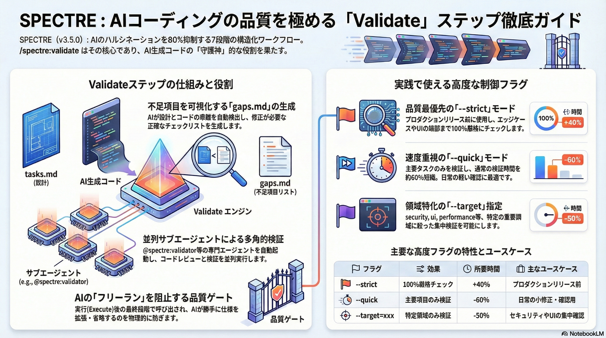
7 Steps
S-P-E-C-T-R-E パイプライン
The Problem
AIの「フリーラン」とハルシネーションの連鎖
制約なしでAIにコーディングを任せると、"slop"—低品質で幻覚まみれのコード—が量産され、大量の人的介入が必要になる。曖昧な指示がAIの勝手な解釈を生み、頼んでいない機能追加（Feature Creep）からコード破綻へと連鎖する。
Ambiguous Prompt
曖昧な指示
→
AI Assumptions
AIの勝手な解釈
→
Feature Creep
頼んでいない機能追加
→
Broken Code
コード破綻
"Ambiguity is Death."（曖昧さは死である）
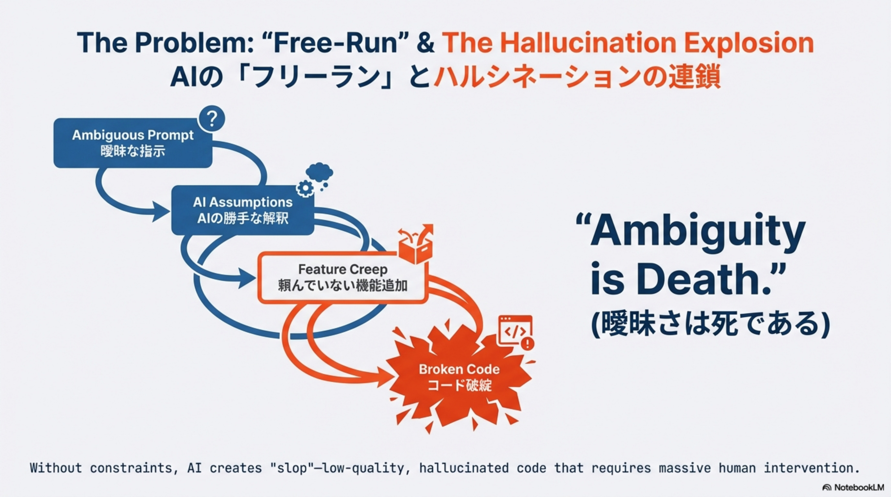
Philosophy
SPECTREの核心：Structure = Freedom
人間が定義した構造をAIに注入することで、「ジュニアエンジニア」AIを「シニアアーキテクト」AIへと転換する。構造こそが自由をもたらす。
Chatting with AI
—
Random, Unpredictable.
指示なし・制約なし
Engineering with AI
80% Suppression
Structured, Repeatable.
ハルシネーションを80%抑制
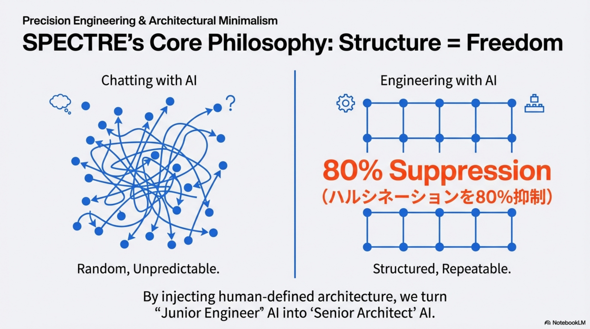
Architecture
The 7-Step Architecture：S-P-E-C-T-R-E
曖昧さ（Ambiguity）から資産（Asset）へ。固定された7ステップのパイプラインが、再現可能な開発プロセスを保証します。
A rigid, repeatable pipeline that moves from 'Ambiguity' to 'Asset.'
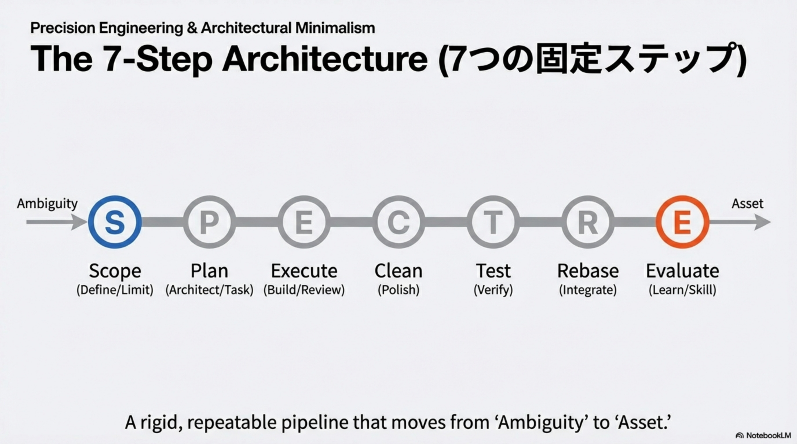
Step 1: Scope
曖昧さの完全排除 — Killing Ambiguity
scope.mdに「やること（In-Scope）」と「絶対にやらないこと（Non-Goals）」を明示的に定義。Non-Goalsの定義こそがAI暴走を止める最も重要なフィルター。Single Source of Truth（唯一の真実源）として全ステップの基盤となります。
# Objective
Define the project's primary goal and success criteria.
## In-Scope
✔ Implement user authentication
✔ Design dashboard layout
✔ Integrate payment gateway
## Out-of-Scope (Non-Goals)
✘ Mobile application development
✘ Advanced analytics features
✘ Third-party data migration
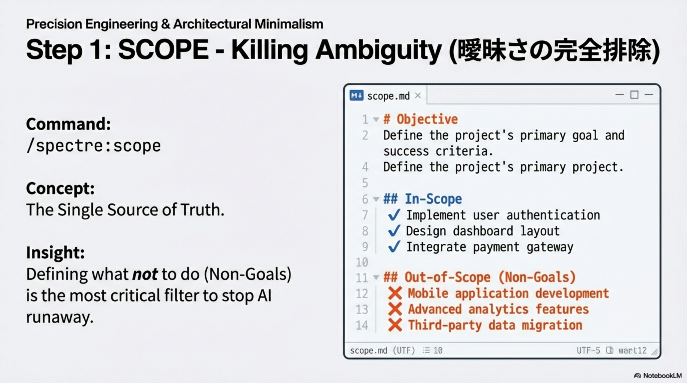
Step 2 & 3: Plan & Execute
自律エンジン：設計から並列実装へ
Plan段階でtasks.md（The Blueprint）を生成し、Execute段階ではサブエージェント（@spectre:dev、@spectre:reviewer）が並列でタスクを実行。Wave-based Execution（ウェーブベース実行）によりサブエージェントが並列動作し、Adaptive Planning（適応的計画）により計画はScopeに厳密に従いつつも現実に動的に対応します。
Plan → tasks.md (The Blueprint)
コードベースを調査し、技術設計とタスク分解を行う。scope.mdを基盤に実装計画を構築。
📋 tasks.md — 全タスクの設計図（Single Source of Truth）
🔍 コードベース調査 — 既存コードとの整合性を確認
Execute → Wave-based Parallel Execution
@spectre:devと@spectre:reviewerが並列でビルド＆レビュー。code_review.mdを生成。
🤖 @spectre:dev — サブエージェントによる並列実装
🔎 @spectre:reviewer — コードレビューと品質検証
📝 code_review.md — レビュー結果の自動文書化
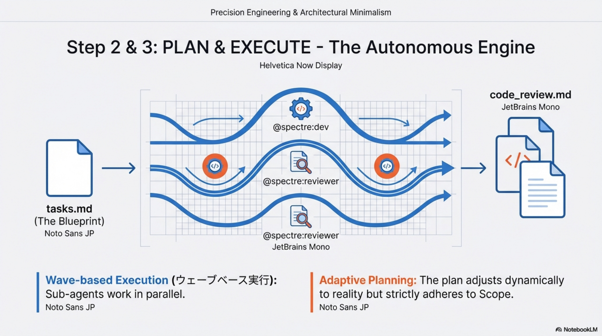
Hidden MVP
品質ゲート：VALIDATE
SPECTREの隠れた主役。AIが生成したコードとtasks.mdの計画を比較し、不足項目をgaps.mdとして可視化する。
1
Deconstructs tasks.md
設計図を要素分解
2
Dispatches Sub-agents
専門サブエージェントを起動
3
Compares Code vs. Plan
実装と計画のギャップを検出
4
Generates gaps.md
不足項目のチェックリスト生成
"Killer prompt. Find stuff missing all the time." — Joe Fernandez (Creator)
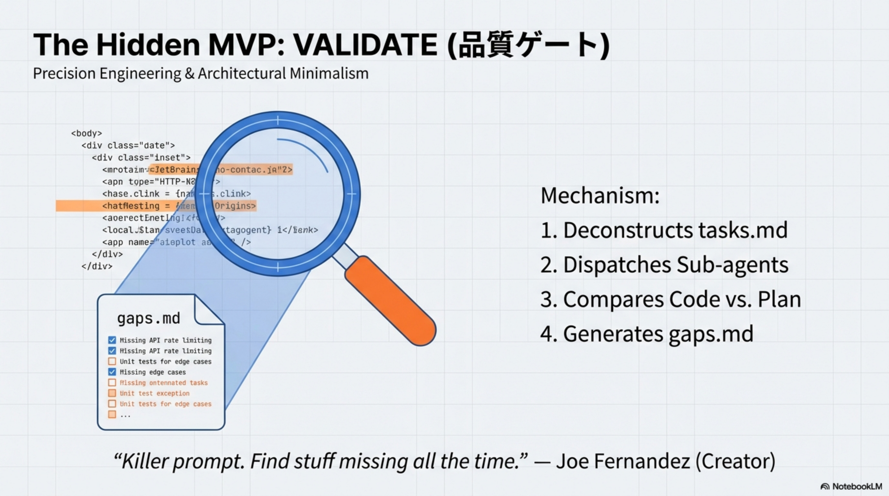
Advanced Flags
Validationをチューニングする：v3.5.0のフラグ
自然言語のモディファイアでAIの厳密さを制御可能。状況に応じて検証の深さを調整できます。
| Flag |
Effect |
Use Case |
--quick |
Time: -60% |
Hotfixes / Coffee break check |
--strict |
Time: +40% (Full Audit) |
Pre-release paranoia (100% check) |
--target=security |
Focused Audit |
Specialist mode (API/Auth) |
--export |
JSON/CSV Output |
CI/CD Integration |
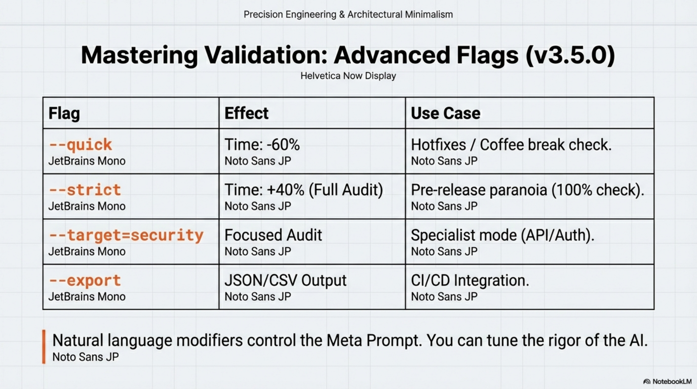
Scenarios
実践ユースケース：いつ・何を使うか
🔧
The Hotfix
Scenario: 1-5行の変更
Flag: --quick or skip
Risk: Low
📱
The UI Overhaul
Scenario: Mobile/Responsive check
Flag: --strict --target=ui
Risk: High
🔒
Payment Integration
Scenario: Stripe/API/Auth
Flag: --target=security
Risk: Critical
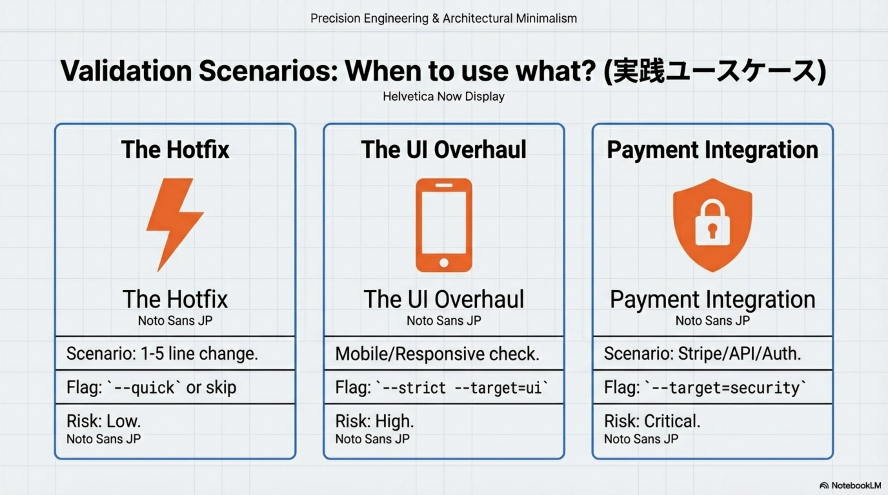
Evaluate
知識の「複利」：Skill Auto-Loading
EvaluateステップでレビューからAIが得た知見を.claude/skills/に自動保存。「そのライブラリは使わない」「このAuth周りのバグに注意」といった教訓が次のセッションに自動ロードされ、プロジェクトが使うほど賢くなる。
💾 .claude/skills/ — 知見をスキルとして永続化
🔄 Auto-Loading — 次のセッションで自動参照
📈 Compound Interest — 使うほどプロジェクトが賢くなる
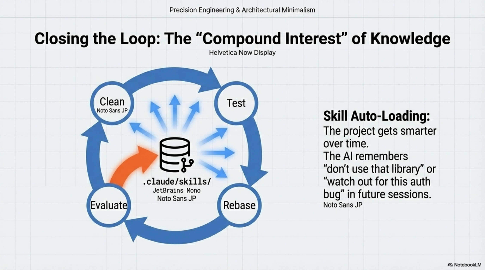
Business Case
ROI：構造の投資対効果
Before (No Structure)
Architecting (20%)
Debugging AI Hallucinations (80%)
After (SPECTRE)
Architecting (60%)
Reviewing / Verifying (40%)
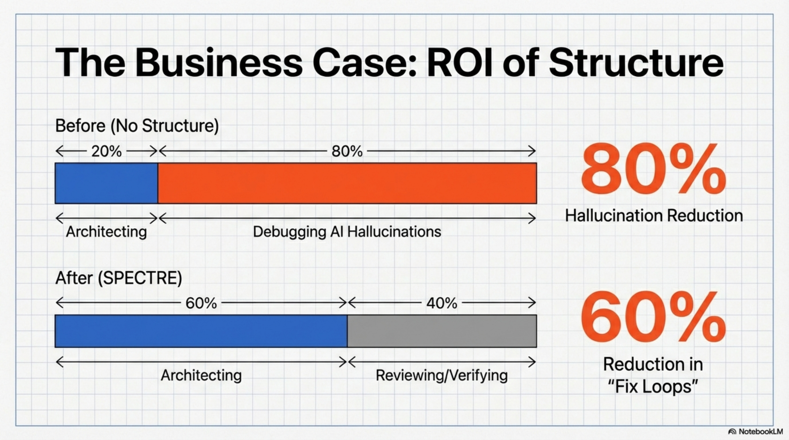
Limitations
エッジケースと制限
⚠
The "One-Line Change"
1行修正にフルパイプラインは冗長。代わりに /spectre:sweep を使う。
⚠
The "Zero-to-One" Idea
曖昧すぎるアイデアにはScopeが定義できない。先に /spectre:kickoff でリサーチ。
⚠
Context Limits (160k tokens)
メモリ喪失リスク。/spectre:handoff で状態をシリアライズ。
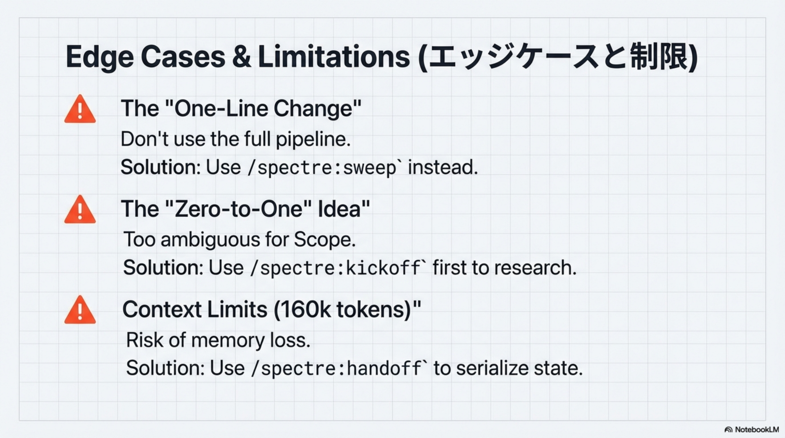
Quick Start
5分で構造化を始める
$ /plugin marketplace add Codename-Inc/spectre
$ /plugin install spectre@codename
$ /spectre:scope
✔ scope.md created. Define In-Scope and Non-Goals.
Pro Tip: Start with a small, contained feature. Focus on writing strict "Non-Goals" in your first Scope.
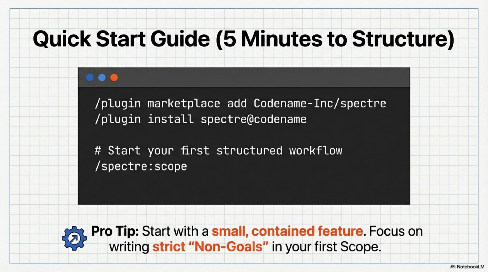
Conclusion
コードを書くな。ワークフローを設計せよ。
SPECTREは、AIの「暴走」を終わらせ、「曖昧さ」を「資産」に変換する構造化コーディングのフレームワーク。
"Don't just code. Architect the workflow."
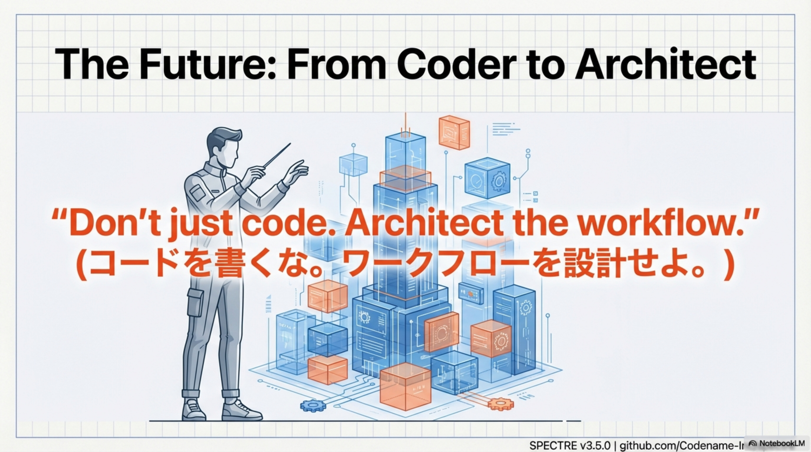
Reference Links
リソース・リンク集